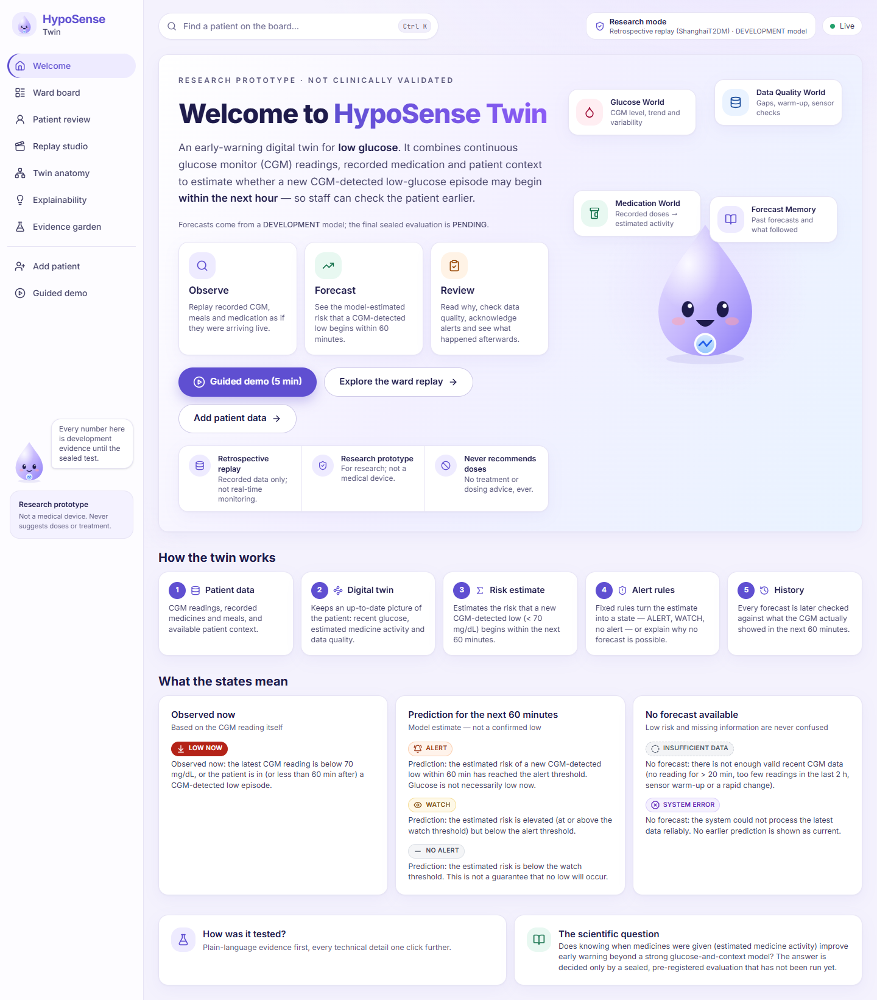
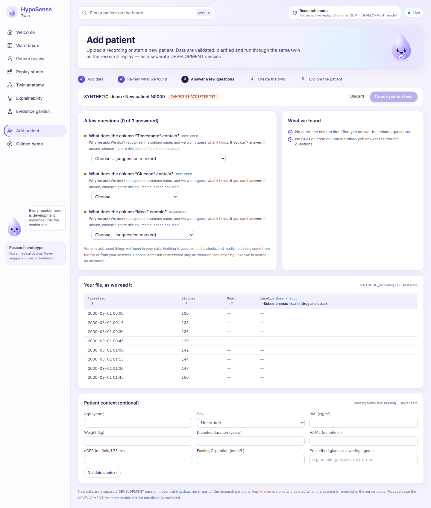

An exposure-aware digital twin that estimates whether a CGM-detected low-glucose episode will begin within the next hour — so staff can check the patient earlier.
Development evidence only · the pre-registered confirmatory evaluation is pending.
Goal: warn 15–60 minutes before a CGM-detected low begins, at a fixed budget of about one false alert per patient-day.
Insulin and secretagogues act for hours. HypoSense tracks the recorded doses and estimates how much may still be active, using documented, label-sourced pharmacological profiles.
Scientific question: does this exposure information improve early warning beyond CGM + context?


| Model | Adds |
|---|---|
| M0 | glucose trend rule (no learning) |
| M1 | learned CGM features |
| M2 | + patient context and meals |
| M3r | + raw medicine timing |
| M3 | + estimated medicine exposure |
H1: M3 warns more episodes than M2 at 1 false alert per patient-day in treated patients of the sealed partition — supported only if the 95% paired patient-bootstrap interval of the difference is above 0.
Patients split once before modelling: 30 development · 70 sealed (never opened so far).
| Sensitivity @ 1 FA/day (treated, 22 patients, 56 episodes) | Estimate | 95% CI |
|---|---|---|
| M0 trend rule | 62.6 % | 49.1 – 83.7 |
| M1 CGM | 85.7 % | 71.9 – 100 |
| M2 + context | 87.5 % | 78.1 – 100 |
| M3 + exposure | 91.1 % | 78.8 – 100 |
M3 − M2 = +3.6 points (−4.2 to +8.8): the interval includes zero. Tuning happened on these patients, so numbers are optimistic. CONFIRMATORY: PENDING
Data: ShanghaiT2DM (Zhao et al., Scientific Data 2023; CC BY 4.0).